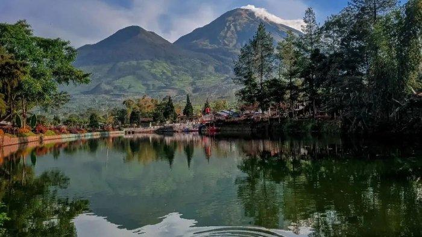

Wonosobo menawarkan berbagai destinasi wisata yang memukau, baik dari segi alam maupun budaya. Beberapa tempat yang patut dikunjungi antara lain:
Dataran Tinggi Dieng: Terkenal dengan pemandangan alamnya yang indah, terdapat Candi Dieng, Telaga Warna, dan Kawah Sikidang. Dieng Culture Festival juga diadakan di sini setiap tahunnya.
Telaga Menjer: Danau yang indah dan tenang, ideal untuk bersantai dan menikmati pemandangan alam yang asri.
Alun-Alun Wonosobo: Tempat yang ramai di pusat kota, cocok untuk berjalan-jalan sore, kulineran, dan menikmati suasana kota.
Air Terjun Sikarim: Air terjun yang spektakuler dengan aliran air yang deras, menawarkan pengalaman yang menyegarkan di tengah alam.
Bukit Sikunir: Spot terbaik untuk menikmati matahari terbit dengan pemandangan yang menakjubkan dari ketinggian.
Agrowisata Tambi: Perkebunan teh yang menawarkan tur edukatif tentang proses pembuatan teh serta pemandangan hijau yang menyegarkan.
Semua tempat ini menawarkan pengalaman yang unik dan menyenangkan. Siap menjelajah Wonosobo?